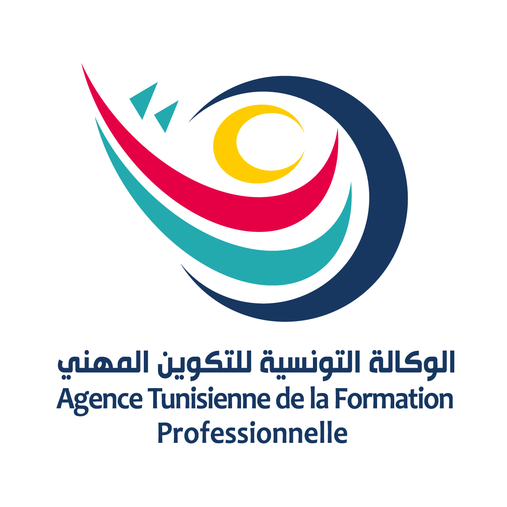

Technicien soudeur monteur
- Niveau :
- BTP
- Durée :
- 24 mois
- Accès :
- 2ème année secondaire

مركز التكوين والتدريب المهني بمساكن
Le centre relève de l’Agence Tunisienne de la Formation Professionnelle (ATFP). Il propose des formations dans la soudure, la maintenance industrielle, l’électricité et la menuiserie aluminium et PVC, avec des travaux pratiques en atelier.
Voir les formations Lire les annoncesSept spécialités pour apprendre un métier et entrer dans la vie active.
Les avis de l’administration, du plus récent au plus ancien.
Aucune annonce pour le moment.
Pour une inscription ou un renseignement, contactez l’administration du centre.
De 8h à 17h
طريق الوردانين كلم 2.5 مساكن
الهاتف : 73 290 812 / 73 290 815
الفاكس : 73 290 811